AI 기반
환경영향평가
기술개발 사례와 전망
일시2026.11.18(수) 14:00~|주관(사)환경영향평가협회 · (사)한국환경영향평가사회
- 1숨쉬는 공간의 대기오염 해상도
- 2AMR-HGN 설계 철학
- 3AMR-HGN 물리유도 잠재공간 융합학습(Adaptive Multi-Resolution Heterogeneous Graph Network)
- 4기후변화 및 환경영향평가 적용
- 5전망 — 환경 물리모델 에뮬레이터
- 6현업화 연구 제안
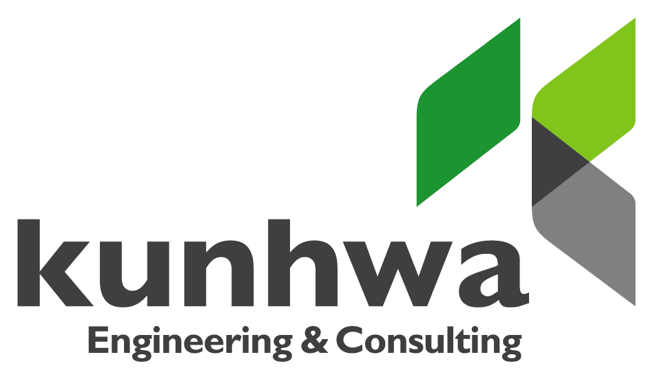
(주)건화 환경평가부 정필수 상무kseia-ai-deck
오늘 여섯 가지를 말씀드립니다사례는 AMR-HGN, 전망은 AI 에뮬레이터와 통합 환경 디지털 트윈 — 3편의 영상과 함께
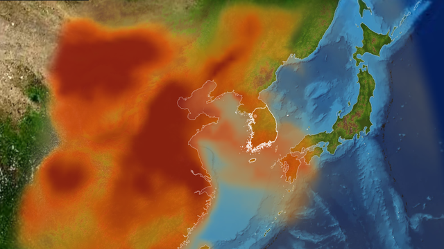
숨쉬는 공간의
대기오염 해상도"왜 이 연구가 필요한가"
국제 연구 흐름과 전지구 모델의 해상도 한계를 짚고 측정하지 않은 공간의 농도를 묻는다.
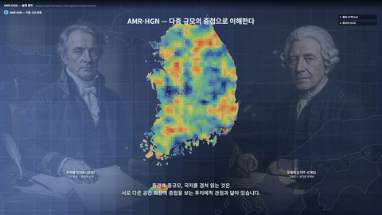
▶설계 철학"자연을 바라보는 관점으로 설계하다."
설계 철학 다큐 · 지구과학 AI 네 사례 · 연산자원 비교로 관점이 구조를 정함을 본다.
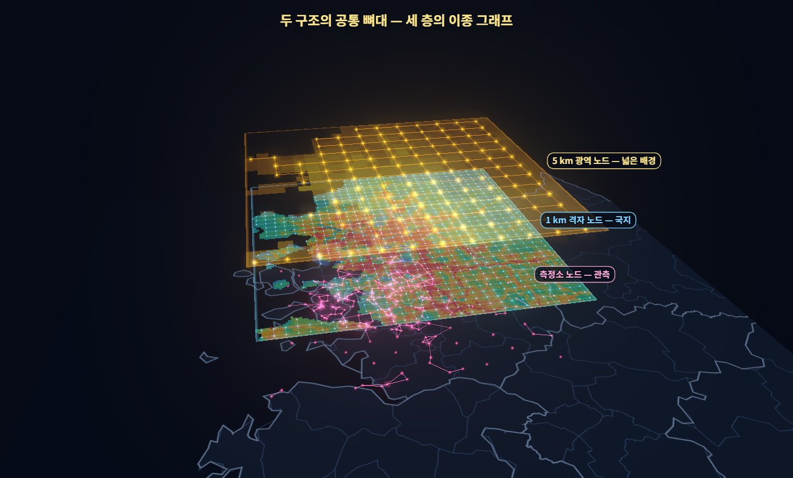
▶AMR-HGN 물리유도
잠재공간 융합학습
공개 자료를 하나의 잠재공간에 융합해 전국 1km 시간별 농도장을 만들고, 화학 법칙으로 검증한다.
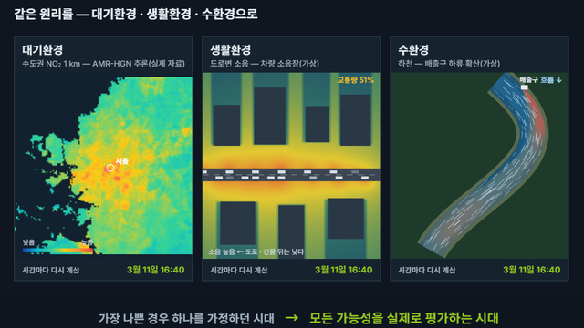
기후변화 및
환경영향평가 적용"12일에서 8,760시간으로"
표본조사를 시공간 정합형 평가로 넘어서고, CMAQ 에뮬레이터 · 환경보건 · 전략평가로 넓힌다.
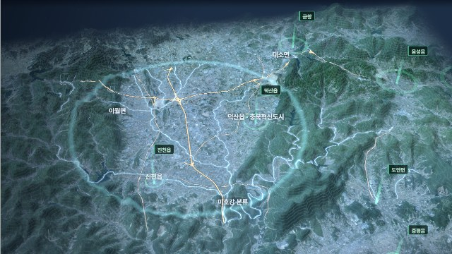
▶전망AI 에뮬레이터 ·
통합 환경 디지털 트윈
에뮬레이터의 흐름 · 현주소 · 한계와 디지털 트윈 · AI 전수 시뮬레이션 의사결정을 그린다.
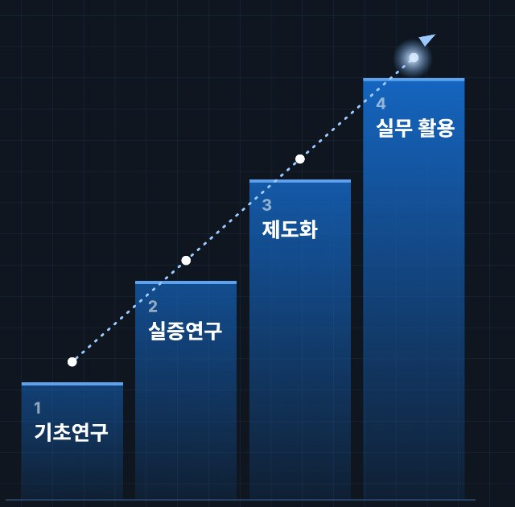
현업화 연구 제안기초연구 → 실증연구 →
제도화 → 실무 활용
평가용 AI의 현업화 실증과 성공 요인 · 협업을 제안한다.
숨쉬는 공간의
대기오염 해상도
왜 이 연구가 필요한가 — 수십 km 격자에서는 도심과 외곽이 같은 값 하나에 묻힌다
대기환경 인공지능 연구는 예측에서
관측하지 않은 공간의 추론과 인과관계 이해로 넓어지고 있다
통계 · 기계학습 예측RF · SVR · LSTM
측정소 한 곳의 PM₂.₅ 를 시간축으로 예측하며, 기존 통계모형보다 나은 성능을 겨룬다.
심층 시공간 모델CNN · GNN · Transformer
측정소 사이의 관계와 위성 · 기상 · 토지이용 자료를 함께 배워 광역 농도장을 그린다.
물리모델 결합CTM–AI 하이브리드 · 물리제약 학습
화학수송모델의 편향을 고치고, 위성을 지상 농도로 바꾸고, 고해상도 장을 복원한다.
첨단 연구 방향Neural Operator · Foundation Model · Causal AI
해상도에 묶이지 않는 연산자 학습, 범용 표현, 배출원 역추정과 인과 규명으로 나아간다.
2024–2026 리뷰가 공통으로 짚는 네 가지 전환
미래 예보시공간 농도장 복원순수 데이터 기반물리 유도 인공지능단일 과제다중 과제 · 기반 모델농도 예측과학적 이해 · 의사결정
대기오염 인공지능 논문 수 상위 10개국
Web of Science 1,835건 · 2021년 10월까지
- 1중국524
- 2미국455
- 3잉글랜드136
- 4인도136
- 5대한민국109
- 6이탈리아89
- 7독일78
- 8대만73
- 9스페인71
- 10호주68
Guo et al. (2022) Front. Public Health 10:933665, Table 1
최근 10년 교신저자 국가 순위
Scopus · 2016–2025 · 기계학습 473편 · 딥러닝 229편
- 기계학습
- 1 인도2 중국3 미국4 영국5 스페인…7 대한민국
- 딥러닝
- 1 인도2 중국3 대한민국4 스페인5 호주
Çelik et al. (2026) J. Atmos. Sol.-Terr. Phys. 281:106777, Fig. 6
전지구 모델이
구별하지 못하는 것
전지구 화학수송모델의 해상도는 수십 km — 서울 도심과 경기 외곽이 같은 값 하나로 덮인다. 최근에는 인공지능으로 1 km 농도장을 추론한다.
환경보건 · 환경정책 · 환경영향평가는 고해상도 대기오염 자료를 요구한다
측정하지 않은 공간의 농도는 어떻게 알 수 있을까?점으로 관측하고, 여러 공간정보로 빈 공간을 추론한다.
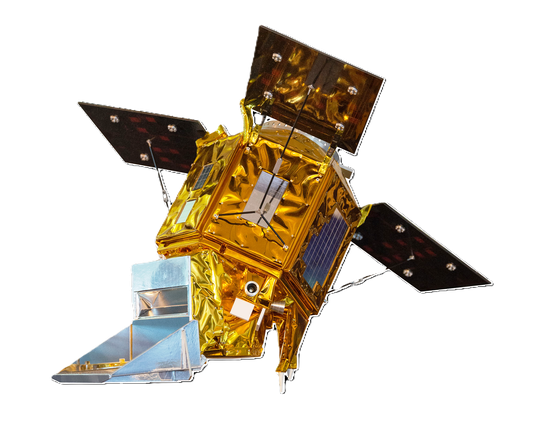
TROPOMI저궤도 · 하루 한 번 13:30 무렵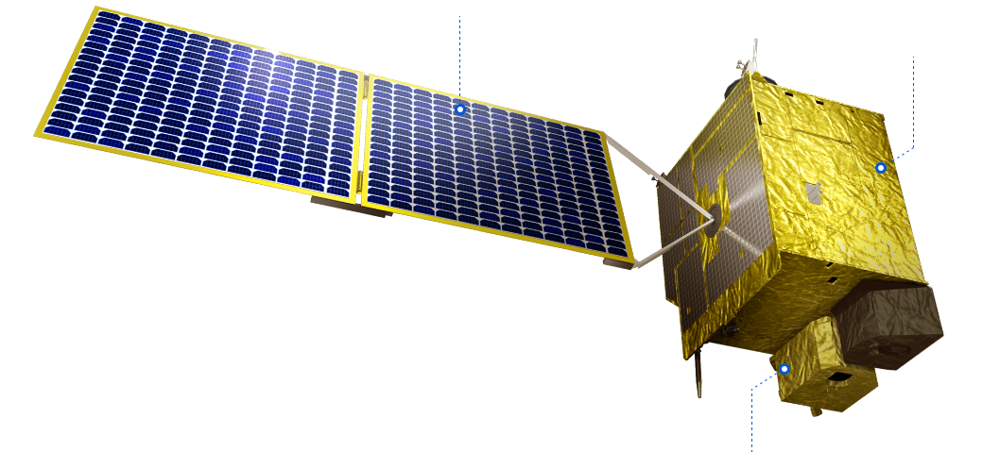
GEMS정지궤도 환경위성 · 자외선·가시광 분광계측정소가 없는 이 지점,
농도는 얼마일까?
측정소 사이를
거리로 보간하면 될까?
- 가장 손쉬운 방법
- 측정소 사이의 공간 구조는 못 담음
농도는 그 자리의 구조를 닮음
- 지형 · 토지피복 · 배출
- 그 지점의 국지 농도를 만듦
기존 자료는 각각 유용하지만
빈 1 km 격자의 정답은 아님
- 광역 대기질 · 바람 — 넓은 지역의 맥락
- 위성 — 대기 기둥 전체 관측, 지상 농도와 다른 물리량
- 고해상도 CTM — 계산비용이 큼
그러나 이 정보들은
서로 관계가 있음
- 지형 · 토지피복 · 배출 · 기상
- 광역 대기질 · 위성 관측 · 측정망
- 관계를 학습 → 측정하지 않은 좌표의 농도
여러 공간정보 →
고해상도 1 km 농도장
- 관측 · 공간 정보 · 맥락 → 농도장 c(x, y, t)
- 그 변환 규칙을 학습
- AMR-HGN — 정보들의 관계를 그래프로 연결
AMR-HGN
설계 철학
- AMR-HGN
- Adaptive Multi-Resolution Heterogeneous Graph Network적응형 다중해상도 이종 그래프 신경망
자연을 바라보는 관점으로 설계하다 — 다른 연구의 관점과 나란히 본다
자연을 바라보는 관점으로
전통적인 이론 기반 물리모델이 각자 자연을 보는 관점으로 설계되었듯,
데이터 기반 인공지능 모델 또한 대기를 바라보는 관점으로 설계할 수 있다.
AMR-HGN은 대기오염을 여러 규모의 중첩으로 보고, 희소·불균질한 측정망을 이종 그래프로 끌어안는다.
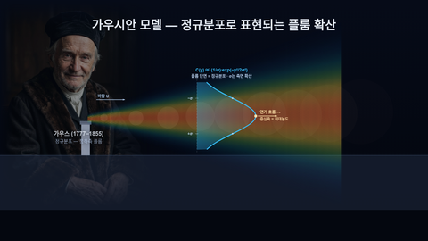
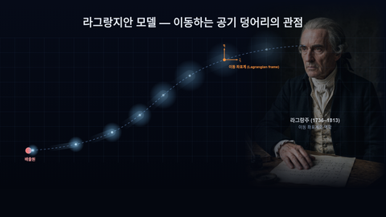
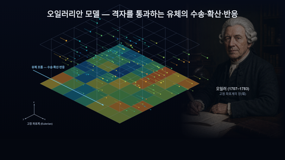
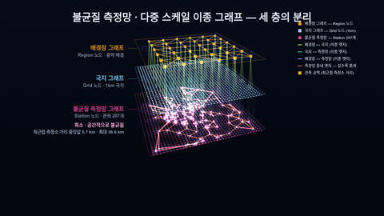
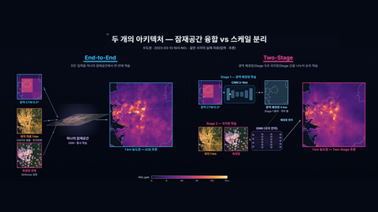
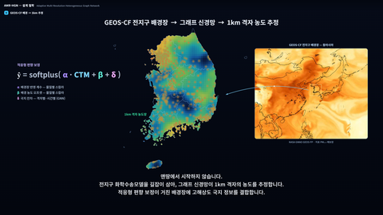
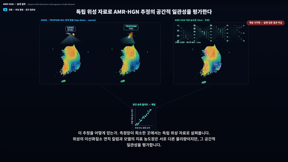
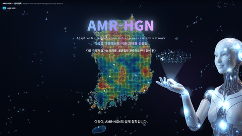
지구과학 AI 모델 — 자연을 보는 관점별 설계
GraphCast
여러 크기 메쉬의 간선을 한 그래프에 모아 국지와 원거리를 함께 잇는다.
Aurora
해상도 · 층 · 변수가 다른 자료를 공통 3차원 잠재 표현으로 바꾼다.
NeuralGCM
미분 가능한 역학 코어가 큰 흐름을, 신경망이 작은 규모 물리를 맡는다.
CorrDiff
UNet 이 평균을, 확산모델이 잔차를 맡는 두 단계로 25 km 재분석을 2 km 로 내린다.
고해상도 농도장 연산, 왜 AI 로 이동하는가?연산자원의 관점
AMR-HGN
- AMR-HGN
- Adaptive Multi-Resolution Heterogeneous Graph Network적응형 다중해상도 이종 그래프 신경망
물리유도 잠재공간 융합학습 — 분산된 공개 자료의 단일 농도장 통합
AMR-HGN 의 뼈대 — 그래프 신경망격자가 아니라 점과 선 위에서 배운다 — 흩어진 측정소를 있는 그대로 다룬다
- 그래프 — 노드와 간선측정소 = 노드 · 인접 연결 = 간선
격자 정렬 불필요 - 이종 그래프 — 종류가 다른 노드 · 간선측정소 · 1 km 격자 · 5 km 광역 통합
관계 종류별 간선 분리 - 메시지 패싱 — 이웃에게 듣고 갱신이웃 메시지 가중 집계 → 상태 갱신
반복할수록 전파 범위 확대
- 노드 3종1 km 격자 · 5 km 광역 · 측정소
- 간선 6종관계별 분리(격자–격자 등)
- 모으기간선 종류별 어텐션 가중 집계
- 읽기격자 노드 → 1 km 농도
같은 목표, 다른 결합 위치
AMR-HGNAdaptive Multi-Resolution Heterogeneous Graph Network적응형 다중해상도 이종 그래프 신경망 — 두 결합 구조
Arch 1End-to-End — 공통 잠재 공간 융합
Arch 2Two-Stage — 5 km 배경장 emulator + 1 km 잔차
다중 규모 중첩 개념에서 출발 — 두 구조의 결합 · 학습 방식 순차 제시 후 비교
개념 시각화 — 농도장 · 배경장 · 잔차 · 학습 곡선은 모델 출력이 아님
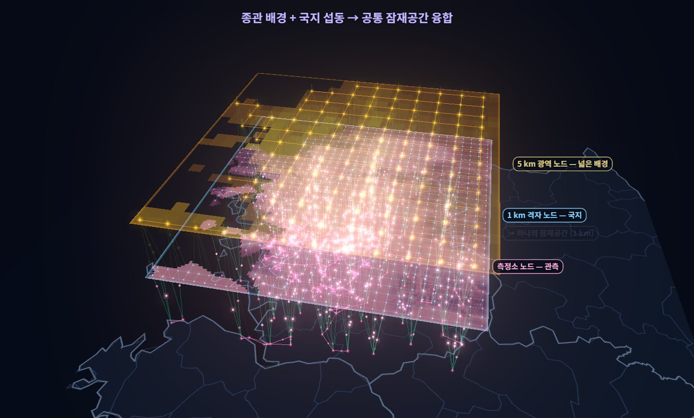
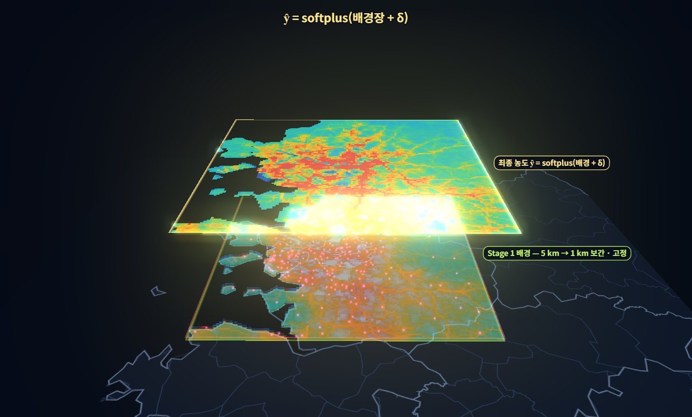
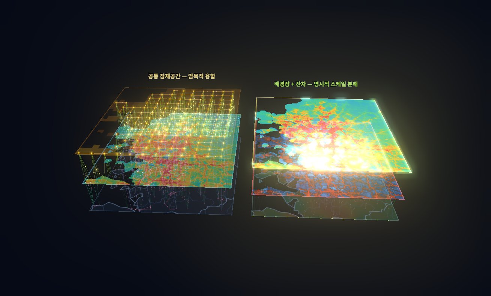
공개 자료만으로, 전국 1km 시간별 대기오염 농도장
5km 입력 · 1km 산출 · 측정소 NO₂ 비교
측정소 R²가 아니라
화학 법칙으로 검증한다
- Ox 보존성
- NOx-Ox 회귀
- 주말효과
- 도시-산림 O₃ 일변화
- 인공위성 GEMS · TROPOMI FNR 비교
- 다년도 평가 2020–2023
서로 다른 오류 구조의 증거가 같은 방향을 가리킬 때 타당성을 말한다
귀납의 통합 consilience of inductions
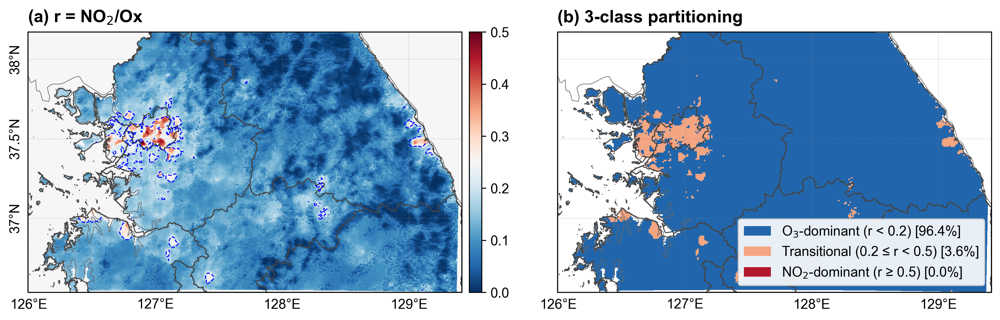
추론장이 스스로 그린 산화제 분배비 r = NO₂/Ox —
수도권 도심만
전이 구간, 그 밖은 O₃ 우세
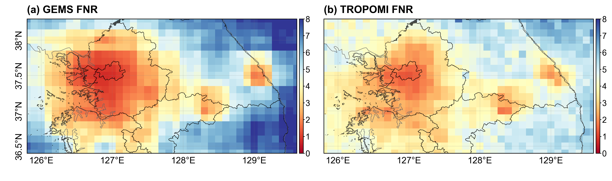
독립 관측인 위성 FNR(HCHO/NO₂) — GEMS · TROPOMI
둘 다 수도권에서
낮다(NOx 포화) — 위 r 의 구조와 겹친다
기후변화 및
환경영향평가 적용
12일에서 8,760시간으로 — 같은 위치 · 같은 시각에서 영향을 합친다
12일 표본 측정의 대표성 한계
- 1현황조사 — 연 12일 측정계절별 연속 3일 · 1년 대표값으로 사용(조사 시나리오 가정)
- 212일 평균 오차 −36 ~ +48 %12일 표본 1만 번 재추출 · 연평균 대비 · 90 % 범위
- 3실제 흔들림 = 공식 표본오차 × 1.30연속 3일의 자기상관 — 독립 표본 가정의 과소평가
- 4시간별 1 km 농도장 — 12일 표본의 통계적 한계 보완현장조사 대체가 아닌 대표 범위 · 누락 구간의 정량 보완
연평균 19.6 → 12일 평균 12.5 ~ 29.0 µg/m³연평균 대비 −36 ~ +48 % · 1만 번 재추출의 90 % 범위
2023 에어코리아 확정자료 · 서울 종로구 도시대기 PM₂.₅ 일평균
표본조사 평가와 시공간 정합형 평가
PM₂.₅ 24시간 평균농도 예측 케이스
서로 다른 날의 값 합산
12일 최대 현황 + 기여 99퍼센타일
PM₂.₅ 24시간 평균농도 예측 케이스
같은 날 · 같은 시각의 값 합산
날마다 현황 + 기여 → 합의 99퍼센타일
가장 보수적인 가정에서 — 모든 가능성의 평가로데이터의 한계가 정한 원칙에서, 데이터가 여는 평가로
- 데이터가 부족하던 시대모든 경우를 계산할 수 없어, 가장 보수적인 경우를 가정했다 — 통계적 대표값 · 최악 조건 가정
- 데이터를 만들어 내는 시대8,760시간의 모든 경우를 같은 자리에서 계산한다 — 기준을 넘을 확률 · 시각 · 장소를 센다
- 생활환경 · 수환경으로소음 · 진동, 수환경의 통계적 · 최악 조건 평가도 시공간 정합형으로 넓힐 수 있다
무거운 화학수송모델을 딥러닝 에뮬레이터로 빠르게
시간별 고해상도 농도장을 평가의 공통 기반으로
환경보건
거주지 · 생활권의 시간별 농도를 코호트에 잇는 정밀 노출평가.
측정소가 없는 동네도 1km 마다 하루하루의 농도를 준다.
실외 농도장은 개인 흡입량과 다르다.
지역 관리
오존 · 미세먼지 고농도가 되풀이되는 곳을 찾아 취약계층 보호와 저감 우선순위에 쓴다.
도로 · 도심 · 산단의 국지 핫스팟이 1km 단위로 갈린다.
고농도 지도가 정책 효과를 입증하지는 않는다.
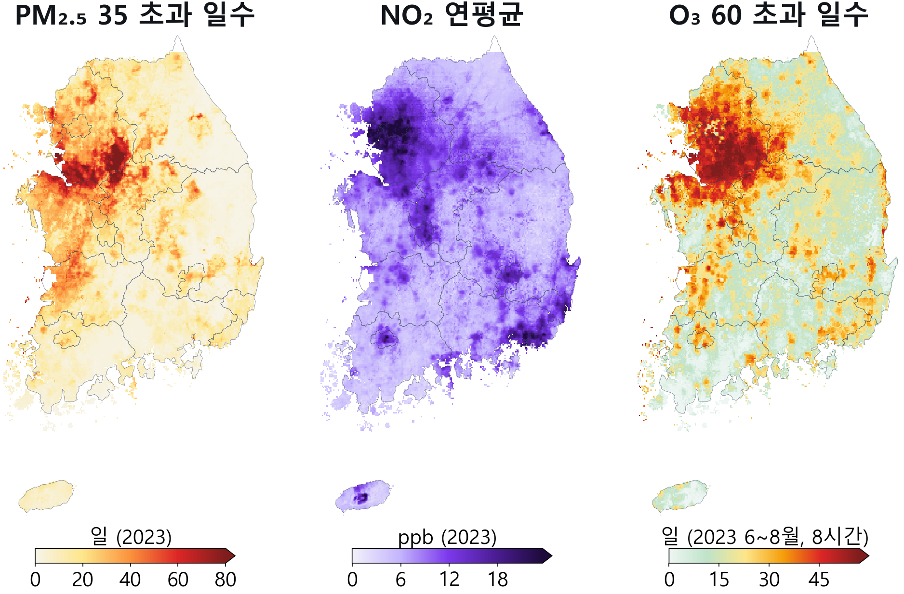
전략환경영향평가는 대안마다 지도를 만들어 고른다
- 입지 분석 — 대기오염지도로 기존 고농도 지역 · 주거지와 겹치는지 먼저 본다
- 대안 비교 — 입지와 배출 시나리오마다 지도를 만들어 나란히 놓고 고른다
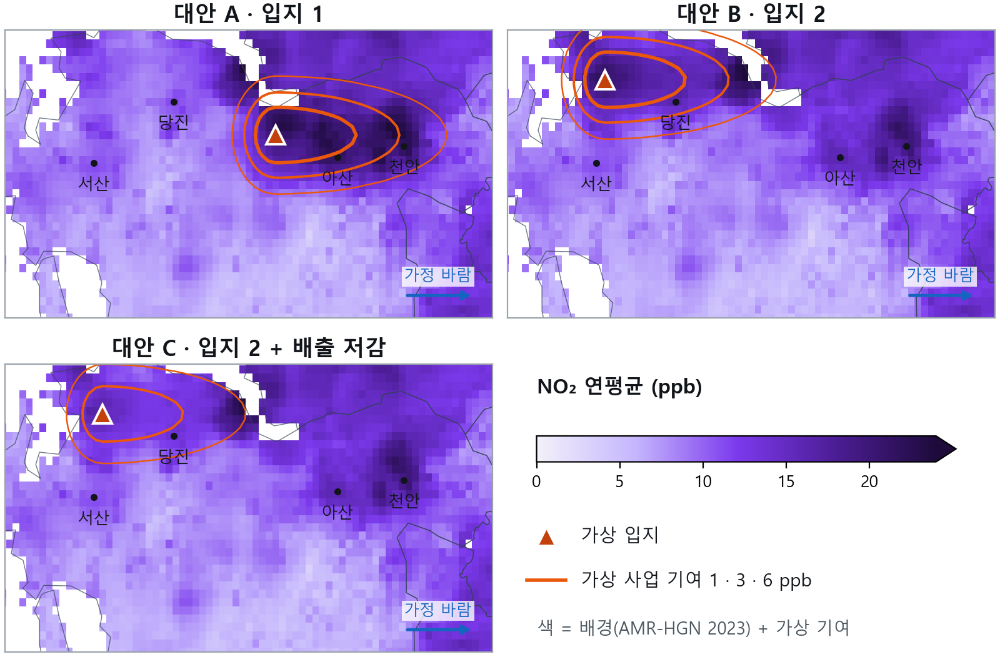
- 1실시간 재현개발 중
학습 자료전지구 CTM · 기상장
배출 · 지형(정적)아키텍처U-Net · FNO
교사 = CMAQ-DA추론지금 시각
5 km CMAQ 급 장 - 2미래 예보확장 계획
학습 자료과거 CMAQ-DA 시계열
+ 기상 · 배출 · 지형아키텍처자기회귀 시계열
Aurora · GenCast 식추론며칠 뒤
CMAQ 급 장 + 앙상블 - 3배출량 섭동전략환경영향평가 활용
학습 자료CMAQ 배출 섭동 런
배출 변화 · 기상 · 기준장아키텍처조건부 U-Net
Δ농도 학습추론대안별 Δ농도
시나리오 CMAQ 장
세 갈래 모두 CMAQ 를 교사로 배운다 — 배출 섭동은 따로 학습해야 한다. CMAQ 이 하는 일과 구현 흐름은 다음 두 장.
AI 산출장을 어디까지 믿어야 할까?
신뢰도 · 불확실성 · 한계를 함께 낸다
- 1신뢰도관측 없는 곳 · 다른 해로 검증한 성능을 함께 밝힌다
- 2불확실성칸마다 값 하나가 아니라 믿을 수 있는 범위로 낸다
- 3한계관측 공백 · 극값 · 학습 범위 밖 조건에서는 해석을 아낀다
검토자는 값이 얼마나 확실한지 보고 따져 묻고, 결정권자는 불확실성까지 알고 판단한다.
AI 산출장은 절대적 성능을 주장하지 않는다 — 의사결정의 보조 근거로 쓰임의 범위를 분명히 한다.
신뢰도·불확실성·한계 명시
아래 판 — 수도권 NO₂ 1km(AMR-HGN E2E 추론, 2023-03-13 10시 KST). 위 σ 판 · 분포는 개념도다.
전망
환경 물리모델 에뮬레이터 — 흐름 · 현주소 · 영향평가의 전망
물리모델 AI 대리모델의 발전 과정에뮬레이터 = 물리모델의 입력 → 출력 관계를 학습해 계산을 대신하는 대리모델(surrogate)
소수 모의로 응답면 학습 → 정책 시나리오 고속 계산
물리모델의 한 과정(화학 · 유출 · 범람)을 신경망이 대체
모델 전체를 대체, 운영 기관이 채택
영향평가 × AI 문헌, 2024년부터 급증Scopus 'environmental impact assessment' AND 'artificial intelligence' — 누적 237편(2025-11-14 검색)
세 수치는 검색어 · 데이터베이스 · 기간이 달라 서로 비교할 수 없다 — 분야별 규모 감각용 · 2024년 이후 증가의 배경(LLM 등장)은 의 추정
AI 에뮬레이터 기반 환경영향평가 전망연산 한계 해소 — 대표 시나리오 몇 개에서 가능한 모든 경우의 평가로 (발표자 전망)
강력한 연산 능력으로 바뀔 환경영향평가의 모습
- AI 현황 추론
- 서로게이트 가속 예측
- 80.1
- 71.5
- 67.0
- 55.6
- 35.2
현업화 연구 제안
기초연구 → 실증연구 → 제도화 → 실무 활용
공개자료 기반 평가용 AI, 현업화 실증 연구 가칭 — 공개 지구환경자료 기반 고해상도 기후 · 대기환경장 재구성 및 시공간 정합형 영향평가 실증
| 연구 묶음 | 검증할 질문 | 산출물 |
|---|---|---|
| 1데이터 · 대표성 | 조사 표본과 국가 관측 · 모델 자료를 어떻게 결합하나 | 시공간 정합 자료 규격 · 재표집 벤치마크 |
| 2배경 · 다중규모 AI | 공개 입력에서 배경 · 국지 정보를 얼마나 회수하나 | CMAQ 에뮬레이터 · AMR-HGN E2E / Two-Stage 통제 비교 |
| 3확률 · 검증 | 관측 공백과 극값의 불확실성을 제대로 표현하나 | 공간 · 연도 차단 시험 · 조건별 교정 |
| 4평가 실증 | 시간별 정합 방식은 언제 유효하고 언제 실패하나 | 기존 방식과 같은 조건의 사업지 비교 |
| 5운용 · 확장 | 저비용 추론 · 예보 · 폭염 확장이 가능한가 | 추론 패키지 · 지연 · 비용 시험 · 폭염 시범모델 |
(안)
- 1기초연구공개자료 AI · 검증 체계
연구 묶음 1~3 - 2실증연구기존 방식과 사업지 비교
연구 묶음 4 - 3제도화평가 제도 · 자료 규격
반영 검토 - 4실무 활용추론 패키지 · 예보 · 폭염
연구 묶음 5
AI 기반 환경영향평가 현업화 추진 체계 단계별 성격 · 추진 주체 · 실무 환류 기반 단계적 고도화 (안)
- 대학 · 연구실 중심 분야별 연구 활발
- 현업화 후보 성과의 원천
- 현장 적용을 위한 연구 단계
- 유망 성과 발굴 · 선별 · 실증
- 실증연구와 병행 추진
- 다자 참여 거버넌스 — 정부 주도
- 초기 불완전성 전제의 단계적 도입
- 실무 경험 기반 개선 · 보완
꿈꾸기 어려웠던 평가를 인공지능으로고해상도 농도장은 응용 예시의 하나다 — 디지털 트윈 · AI 전수 시뮬레이션 의사결정으로 넓히려면 기초연구부터 현업화 연구까지 이어져야 한다
셋 중 하나라도 비면 성능이 서지 않는다 — 셋이 맞물리는 곳이 성능이다
- 데이터 통합측정망 · 국가 DB 연계
- 매체별 AI대기 · 수질 · 소음 · 생태
- 전수 시뮬레이션대안별 예측 · 점수화
- 의사결정 · 제도최적안 · 평가 실무
- 매체별 독립 검증학습에 없던 지역 · 연도 · 사업지에서의 재현
- 불확실성 정량화예측 범위 제시 · 대안 순위의 안정성 확인
- 물리 · 화학 · 생태 일관성과학 법칙 부합 · 매체 간 예측 정합
- 데이터 표준 · 운영 체계측정망 · 국가 DB 연계 규격 · 자료 · 모델 버전 관리
- 설명 가능한 의사결정점수 · 가중치 근거 공개 · 평가 지침 · 제도 수용성
AI 기반 환경영향평가 — 기술개발 사례와 전망
감사합니다.
- 1관측과 환경장을 연결하고
- 2같은 시공간에서 영향을 평가하며
- 3기후 고위험 지역 식별로 넓힌다